library(PupillometryR) #> Loading required package: dplyr #> #> Attaching package: 'dplyr' #> The following objects are masked from 'package:stats': #> #> filter, lag #> The following objects are masked from 'package:base': #> #> intersect, setdiff, setequal, union #> Loading required package: ggplot2 #> Loading required package: rlang
This package is designed to make dealing with pupil data (perhaps more traditionally done in MATLAB) easier to wrangle in R. It makes heavy use of a few packages which should be acknowledged here, especially the (excellent) packages fda and signal.
As well as the above packages, it is very important to note that the type of analysis shown here has been available in MATLAB for a while, and there is an excellent tutorial on it, which I thoroughly recommend reading first, written by Sylvain Sirois, here:.
It’s worth making sure that your setup and experiment do facilitate the use of pupillometry - it may not be suited for all kinds of experiment.
Getting started
We will first run through an example analysis with the data provided in the package, which, again, comes from Sylvain Sirois’ tutorial on his webpage.
The first thing I would recommend doing is having a close look at the pupil data. Eyetrackers have a couple of different ways of dealing with this, so it’s important to know a few things:
- What unit of measurement is being used
- What value is given to missing data or blinks (typically ., -1, or NA)
- What framerate were you recording at, and is this consistent.
The data here is an eyetracking experiment with hard and easy trials, performed on 9 participants. Participant 8 needs to be removed (more details on Sylvain’s tutorial).
data("pupil_data") #Check that IDs are not numeric pupil_data$ID <- as.character(pupil_data$ID) #remove participant number 8, who had problematic data pupil_data <- subset(pupil_data, ID != 8) #blinks were registered as -1, so replace with NAs pupil_data$LPupil[pupil_data$LPupil == -1] <- NA pupil_data$RPupil[pupil_data$RPupil == -1] <- NA
The plotting is also a theme of this tutorial, so I will set a nice theme that makes the plots look pretty:
library(ggplot2) theme_set(theme_classic(base_size = 12))
First up, we need to put the data into pupillometryR format for further analysis
Sdata <- make_pupillometryr_data(data = pupil_data, subject = ID, trial = Trial, time = Time, condition = Type)
In the current data, it is not a concern, but there may be a situation where certain timebins are missing from your data. This can be fixed here, and we will look at the raw data:
new_data <- replace_missing_data(data = Sdata) #> replace_missing_data will only help if you have missing timepoints, and a reliable time column. head(new_data) #> ID Trial Time RPupil LPupil Timebin Type #> 1 1 Easy1 16.66667 3.233615 2.935160 1 Easy #> 2 1 Easy1 33.33333 3.216972 2.919698 2 Easy #> 3 1 Easy1 50.00000 3.205405 2.924402 3 Easy #> 4 1 Easy1 66.66667 3.217505 2.935777 4 Easy #> 5 1 Easy1 83.33333 3.214905 2.928921 5 Easy #> 6 1 Easy1 100.00000 3.211777 2.922048 6 Easy
Equally, if your data is not cut to the time windows that you are interested in, the subset_data function allows trimming. PupillometryR has some built-in plotting functions to allow you to look at certain data types. You simply need to specify a pupil column to display, and how you would like the data displayed in groups. The plots are ggplot items, so can be edited with themes, and arguments such as ylab(). Below we display it first by condition, then by subject:
plot(new_data, pupil = LPupil, group = 'condition') #> Warning: Removed 3639 rows containing non-finite values (stat_summary).
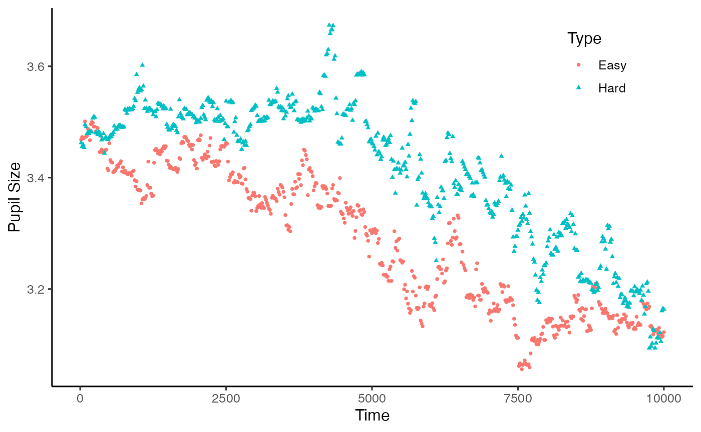
plot(new_data, pupil = LPupil, group = 'subject') #> Warning: Removed 3639 rows containing non-finite values (stat_summary).
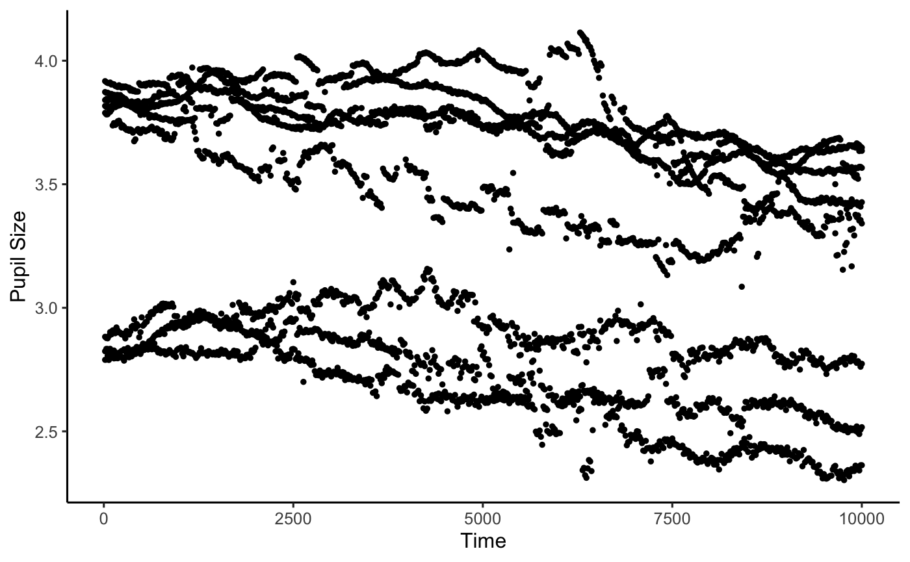
Smoothing and cleanup
PupillometryR offers a few smoothing options to make processing the data a little easier. We’ll do the full set here. A great reference for these is Sylvain’s tutorial, and also Jackson and Sirois, 2009, Dev. Sci. First off, we can regress one pupil against the other to get some measure of smoothing.
regressed_data <- regress_data(data = new_data, pupil1 = RPupil, pupil2 = LPupil)
Now that we have done that, we want the mean of the two pupil sizes, so let’s see how that looks:
mean_data <- calculate_mean_pupil_size(data = regressed_data, pupil1 = RPupil, pupil2 = LPupil) plot(mean_data, pupil = mean_pupil, group = 'subject') #> Warning: Removed 3591 rows containing non-finite values (stat_summary).

Now that we have a single pupil measure to work with, we can manipulate the data a little more easily. First thing we can do is to downsample the data. This is useful when we have large scale data, or when we have sampled at a really high rate, and we need to reduce it so we are measuring meaningful change. Here we have taken the median, but he mean could also be taken. We just need to specify the timebin size, in ms:
mean_data <- downsample_time_data(data = mean_data, pupil = mean_pupil, timebin_size = 50, option = 'median') #> Calculating median pupil size in each timebin
Now we need to clean up our data - let’s first assess how much missing data there is:
missing <- calculate_missing_data(mean_data, mean_pupil) head(missing) #> # A tibble: 6 x 3 #> ID Trial Missing #> <chr> <fct> <dbl> #> 1 1 Easy1 0.104 #> 2 1 Hard1 0.144 #> 3 1 Easy2 0.0846 #> 4 1 Hard2 0.104 #> 5 1 Easy3 0.149 #> 6 1 Hard3 0.139
We can see if we view the whole file that participant 6 has a fair amount of trials with a high missing data proportion. Now we need to clean this up. We have two parameters to do this - first is the proportion of data that we can accept missing in one trial before removing it from analysis. The second is what proportion of trials we can accept as missing before removing a participant for being unreliable. In this example, we will remove trials that have more than 75% of data missing, and we will remove participants that have more than 75% of trials removed.
mean_data2 <- clean_missing_data(mean_data, pupil = mean_pupil, trial_threshold = .75, subject_trial_threshold = .75) #> Removing trials with a proportion missing > 0.75 #> ...removed 0 trials #> Removing subjects with a proportion of missing trials > 0.75 #> ...removed 0 subjects
Now we come to filtering the data. PupillometryR offers 3 filter types: A hanning window, a low-pass butterworth filter, and a median filter. The low-pass filter can be a little unstable at the beginning and end of each trial, so it’s worth looking at your data to see if it’s appropriate. Here we will use the median filter. The degree gives the size of the rolling window.
filtered_data <- filter_data(data = mean_data2, pupil = mean_pupil, filter = 'median', degree = 11) #> Performing median filter plot(filtered_data, pupil = mean_pupil, group = 'subject') #> Warning: Removed 1376 rows containing non-finite values (stat_summary).
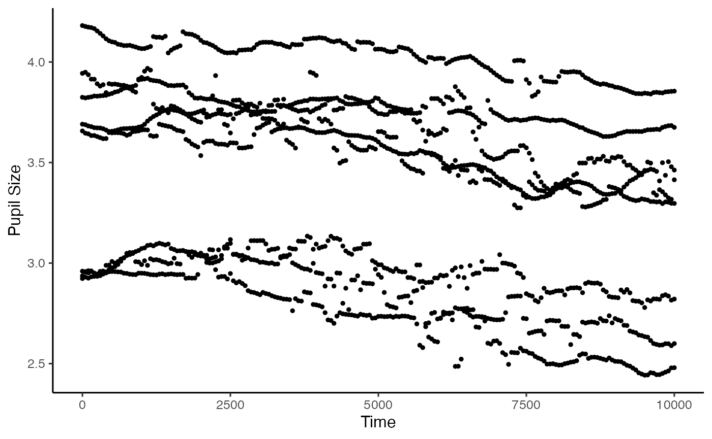
The next step is to interpolate across blinks. Filtering before the interpolation generally allows more sensible interpolation, but the way this is done varies a bit on the data, and you will see examples without this. We can interpolate in this package either linear or cubic, but again, it’s best to always check your data afterwards to make sure it looks the way you might expect. Here we opt for the linear interpolation:
int_data <- interpolate_data(data = filtered_data, pupil = mean_pupil, type = 'linear') #> Performing linear interpolation plot(int_data, pupil = mean_pupil, group = 'subject')
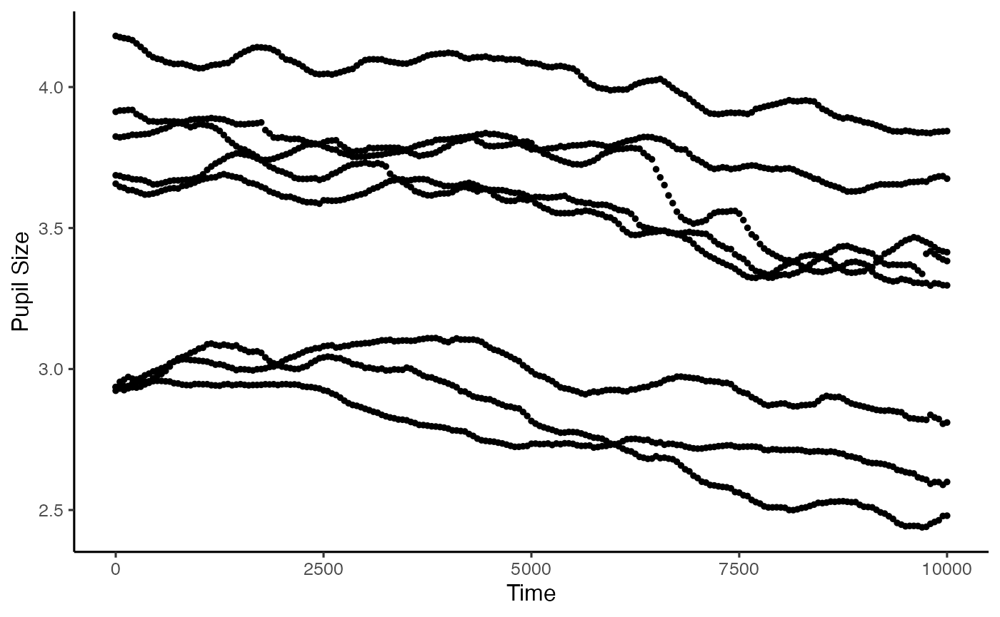
Baselining the data is a powerful way of making sure we control for between-participant variance of average pupil size. If we are looking at analyses that are largely within-subject, as we do here, this may not be such an issue, but we will do this anyway. This function allows us to baseline to the mean pupil size within a time window. Here we are just taking the first 100ms of the trial. If your baseline period is just outside of your analysis window (which it often will be), you can use subset_data() to remove that after baselining.
base_data <- baseline_data(data = int_data, pupil = mean_pupil, start = 0, stop = 100) plot(base_data, pupil = mean_pupil, group = 'subject')
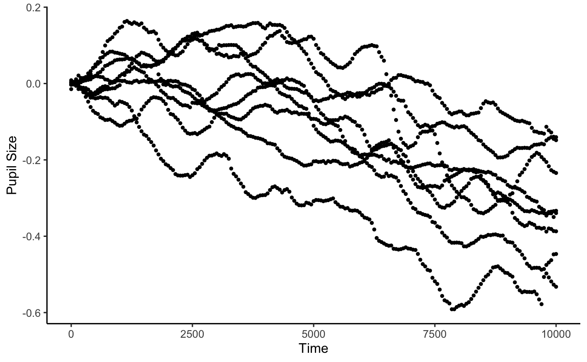
Window analyses
PupillometryR gives us a couple of options for window analysis. One is overall averages, the other is to break the data up into discrete time windows, and to analyse them. First we will opt for the overall averages. We can plot these with any of boxplots, violin plots, or, since the new edition, Micah Allen-esque raincloud plots (Allen et al., 2018).
window <- create_window_data(data = base_data, pupil = mean_pupil) plot(window, pupil = mean_pupil, windows = F, geom = 'boxplot')
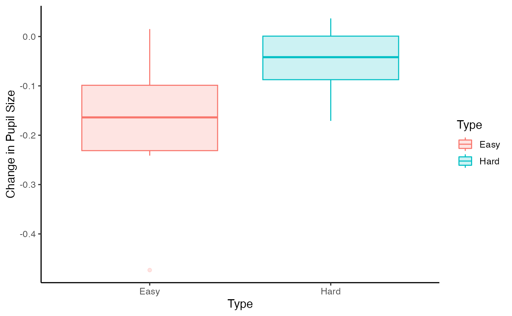
head(window) #> ID Type mean_pupil #> 1 1 Easy -0.227838342 #> 2 1 Hard -0.069627994 #> 3 2 Easy -0.100820080 #> 4 2 Hard 0.001625416 #> 5 3 Easy -0.092679658 #> 6 3 Hard 0.000489152
We could then simply analyse this with a t-test if we wished.
t.test(mean_pupil ~ Type, paired = T, data = window) #> #> Paired t-test #> #> data: mean_pupil by Type #> t = -3.8043, df = 7, p-value = 0.006677 #> alternative hypothesis: true difference in means is not equal to 0 #> 95 percent confidence interval: #> -0.20721815 -0.04835966 #> sample estimates: #> mean of the differences #> -0.1277889
Alternatively, we may wish to look at the data in chunks. Here we group the data in to 2000ms timebins for analysis (and we will opt for the raincloud plot in this instance):
timeslots <- create_time_windows(data = base_data, pupil = mean_pupil, breaks = c(0, 2000, 4000, 6000, 8000, 10000)) plot(timeslots, pupil = mean_pupil, windows = T, geom = 'raincloud')
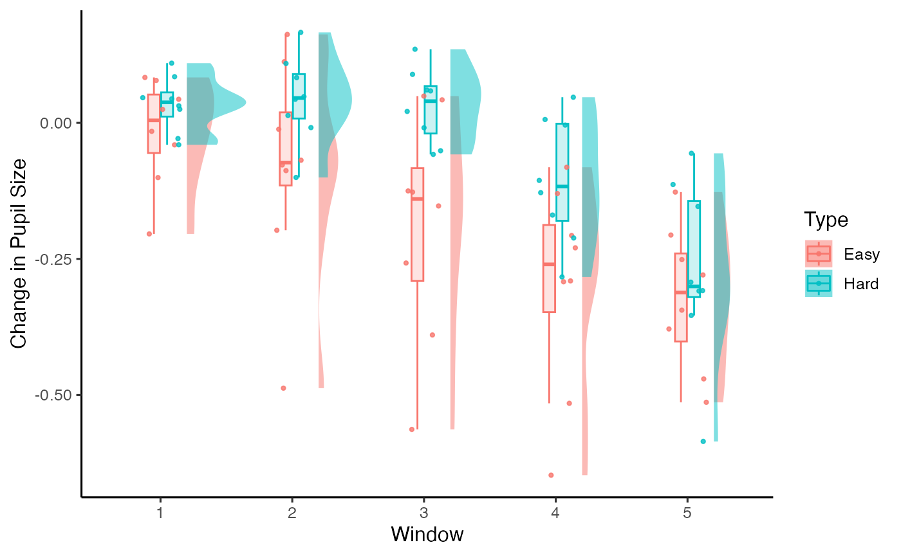
head(timeslots) #> ID Type Window mean_pupil #> 1 1 Easy 1 -0.01558936 #> 2 1 Easy 2 -0.19736969 #> 3 1 Easy 3 -0.38981814 #> 4 1 Easy 4 -0.29046219 #> 5 1 Easy 5 -0.25125856 #> 6 1 Hard 1 0.03128440
And again, we could analyse this with a linear model or an anova:
lm(mean_pupil ~ Window * Type, data = timeslots) #> #> Call: #> lm(formula = mean_pupil ~ Window * Type, data = timeslots) #> #> Coefficients: #> (Intercept) Window2 Window3 Window4 #> -0.0164128 -0.0655360 -0.1741322 -0.2827709 #> Window5 TypeHard Window2:TypeHard Window3:TypeHard #> -0.3049736 0.0504154 0.0758177 0.1709178 #> Window4:TypeHard Window5:TypeHard #> 0.1426255 -0.0005589
Modelling with Generalised Additive Models
Here we interfact with the mgcv package, an exceptionally powerful package for GAM data, by Simon Wood. I strongly encourage reading the vignette and checking out some of the great online tutorials (of which there are plenty; I quite like Michael Clark’s one here) before proceeding with these.
We have to do a little bit of setting up of our variables (scaling and centering) before we continue. I need to make some variables numeric (the ones with an n on the end), and I am using the way trials are labelled to make this a numeric variable (this would probably be different for your data).
library(mgcv) #> Loading required package: nlme #> #> Attaching package: 'nlme' #> The following object is masked from 'package:dplyr': #> #> collapse #> This is mgcv 1.8-31. For overview type 'help("mgcv-package")'. base_data$IDn <- as.numeric(base_data$ID) base_data$Typen <- ifelse(base_data$Type == 'Easy', .5, -.5) base_data$Trialn <- as.numeric(substr(base_data$Trial, 5, 5)) base_data$Trialn <- ifelse(base_data$Typen == .5, base_data$Trialn, base_data$Trialn + 3) base_data$ID <- as.factor(base_data$ID) base_data$Trial <- as.factor(base_data$Trial)
Right, let’s proceed with setting up a simple model. It’s recommended for the amount of data points we might have for PupillometryR, bams might be a better option, but both gam() and bam() will work.
m1 <- bam(mean_pupil ~ s(Time) + s(Time, by = Typen), data = base_data, family = gaussian) summary(m1) #> #> Family: gaussian #> Link function: identity #> #> Formula: #> mean_pupil ~ s(Time) + s(Time, by = Typen) #> #> Parametric coefficients: #> Estimate Std. Error t value Pr(>|t|) #> (Intercept) -0.117178 0.001984 -59.05 <2e-16 *** #> --- #> Signif. codes: 0 '***' 0.001 '**' 0.01 '*' 0.05 '.' 0.1 ' ' 1 #> #> Approximate significance of smooth terms: #> edf Ref.df F p-value #> s(Time) 7.197 8.226 434.7 <2e-16 *** #> s(Time):Typen 7.331 8.483 167.2 <2e-16 *** #> --- #> Signif. codes: 0 '***' 0.001 '**' 0.01 '*' 0.05 '.' 0.1 ' ' 1 #> #> R-sq.(adj) = 0.341 Deviance explained = 34.2% #> fREML = -2050.2 Scale est. = 0.037995 n = 9648
We can use our default plotting function to see how it looks compared to the raw data, just by specifying the model= argument.
plot(base_data, pupil = mean_pupil, group = 'condition', model = m1)
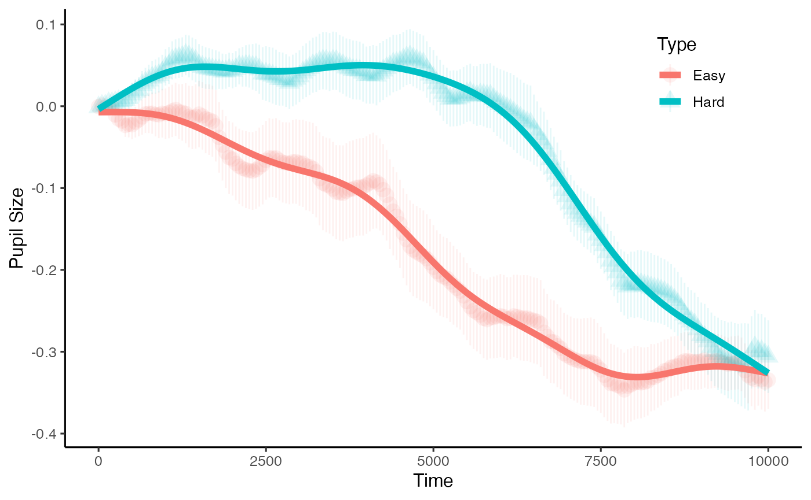
Of course there is the fact that we expect there to by some variation by trial, and that we should expect there to be differences for each participant. Our model also only accounts for a small amount of the variance. This model, therefore is no good. The way to check this is to assess model fit with the qqnorm, and to check the autocorrelation. We can do this with the help of the itsadug package:

itsadug::acf_resid(m1)
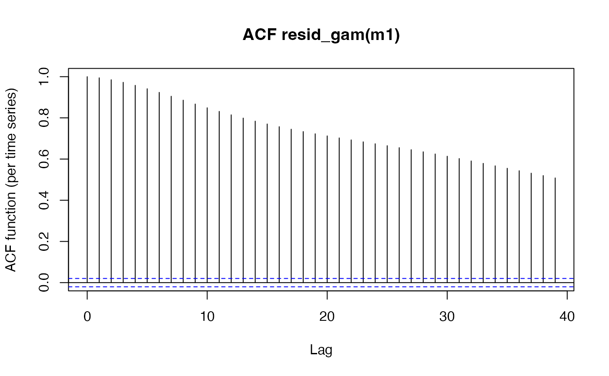
While the qqnorm looks to be almost passable, the autocorrelation in the second plot is very high. This is an important consideration in time-series data, and due consideration needs to be given to this. For a full discussion of how this issue affects time course data, and specifically pupil data, I highly recommend Jacolien van Rij et al’s paper here.
To reduce autocorrelation there are many methods we can try, as you will see from the above paper. I will stop short of repeating each of the steps taken in the excellent paper above, and jump straight away to a much more appropriate model for this data. First I will code in events (participant per trial). I will also create a second data frame to do this (model_data), so that the data we are working with doesn’t lose its properties, and we can keep using the plotting functions.
base_data$Event <- interaction(base_data$ID, base_data$Trial, drop = T) model_data <- base_data model_data <- itsadug::start_event(model_data, column = 'Time', event = 'Event') model_data <- droplevels(model_data[order(model_data$ID, model_data$Trial, model_data$Time),])
We now need to model this. We are setting an AR parameter, and allowing events to vary by time. You will see our deviance accounted for is now up around 96% - much better! The qqnorm is still far from perfect, and the commented-out model below m2 would do a bit better at this (again from van Rij et al) by using a scaled t distribution - but would take ages to run.
m2 <- bam(mean_pupil ~ Typen + s(Time, by = Typen) + s(Time, Event, bs = 'fs', m = 1), data = base_data, family = gaussian, discrete = T, AR.start = model_data$start.event, rho = .6) # m2 <- bam(mean_pupil ~ # s(Time, by = Typen) + # s(Time, Event, bs = 'fs', m = 1), # data = base_data, # family = scat, # discrete = T, # AR.start = model_data$start.event, rho = .6) summary(m2) #> #> Family: gaussian #> Link function: identity #> #> Formula: #> mean_pupil ~ Typen + s(Time, by = Typen) + s(Time, Event, bs = "fs", #> m = 1) #> #> Parametric coefficients: #> Estimate Std. Error t value Pr(>|t|) #> (Intercept) -0.16315 0.01448 -11.268 <2e-16 *** #> Typen 0.03605 0.08891 0.406 0.685 #> --- #> Signif. codes: 0 '***' 0.001 '**' 0.01 '*' 0.05 '.' 0.1 ' ' 1 #> #> Approximate significance of smooth terms: #> edf Ref.df F p-value #> s(Time):Typen 6.361 6.624 2.367 0.0165 * #> s(Time,Event) 418.828 431.000 357.310 <2e-16 *** #> --- #> Signif. codes: 0 '***' 0.001 '**' 0.01 '*' 0.05 '.' 0.1 ' ' 1 #> #> Rank: 443/444 #> R-sq.(adj) = 0.96 Deviance explained = 96.2% #> fREML = -21837 Scale est. = 0.0007909 n = 9648 qqnorm(resid(m2))
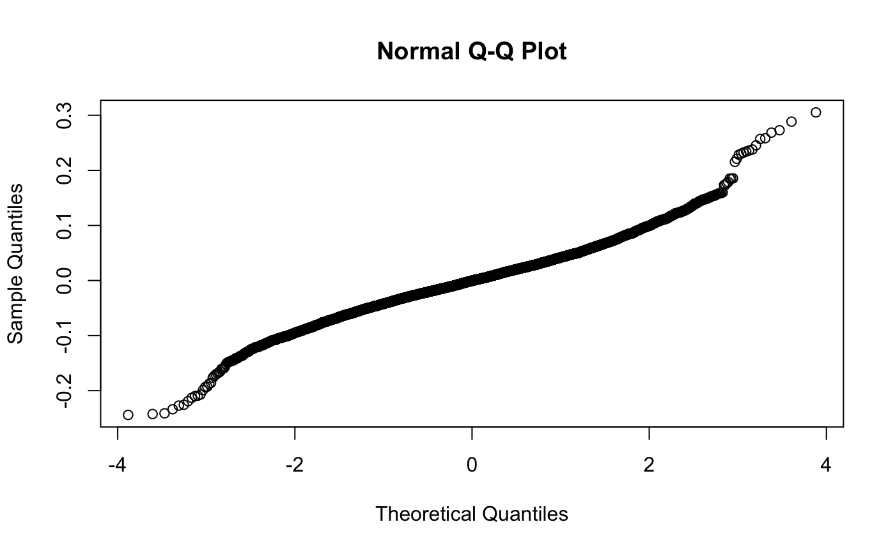
itsadug::acf_resid(m2)
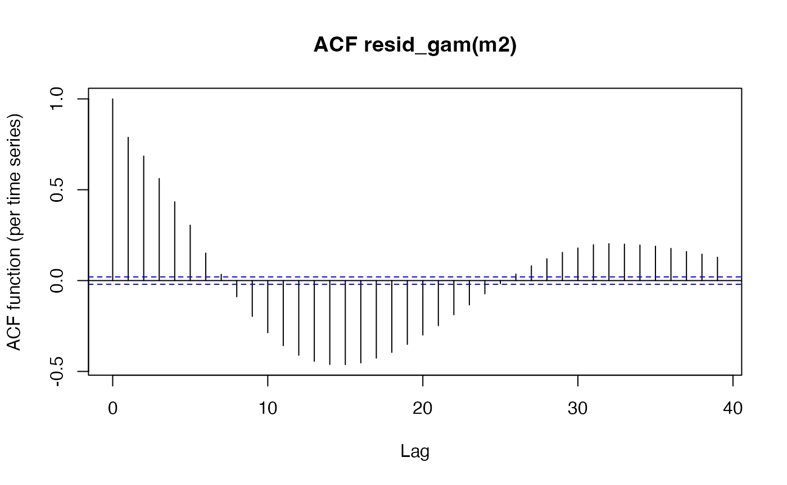
plot(base_data, pupil = mean_pupil, group = 'condition', model = m2)
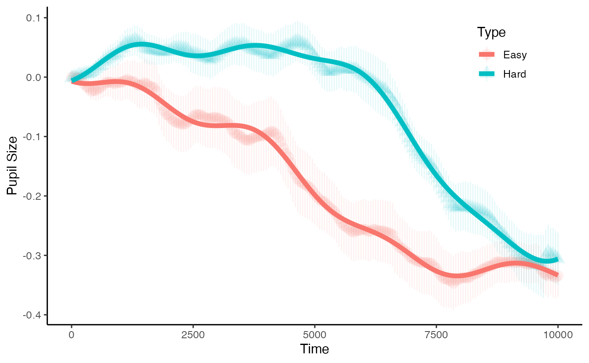
The summary from our second model indicates that there may be marginal evidence for this effect of condition. But how and when do they diverge???
(In fact, TJ Mahr was good enough to point out this elegant solution for this using GAM methods with the itsadug package, which I will link to rather than take credit for)
Estimating divergences with functional data analysis
The above analyses may well suffice for what we have planned. However, sometimes it’s useful for analysis to examine change over time, especially how and when two conditions diverge, and we can do that with Functional Data Analysis (FDA). This part of the package makes usage of the fda package. The complete guide really has been written in 1997 by Ramsay and Silverman, and there is a very helpful website on FDA here. This package is currently only setup to use this analysis for two-condition experiments, but I hope to add options for functional ANOVA in the future.
To do this, first we want get the difference between the two conditions for each participant. By default this package wil take condition 2 - condition 1, so reorder the factors if required.
differences <- create_difference_data(data = base_data, pupil = mean_pupil) #> Hard minus Easy -- relevel condition if this is not the intended outcome plot(differences, pupil = mean_pupil, geom = 'line')
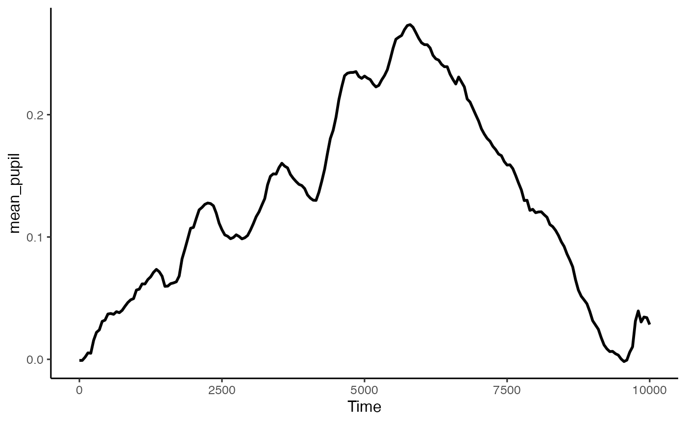
We can now convert this to a functional data structure, made up of curves. To do this for this data we are going to make it up of cubics (order = 4) with 10 knots (basis = 10). The appropriate numbers here will depend on your dataset, and I strongly advise consulting Ramsay and Silverman’s book, and the FDA website, as well as Sylvain’s paper mentioned above. This interfaces with the fda package.
spline_data <- create_functional_data(data = differences, pupil = mean_pupil, basis = 10, order = 4) plot(spline_data, pupil = mean_pupil, geom = 'line', colour = 'blue')
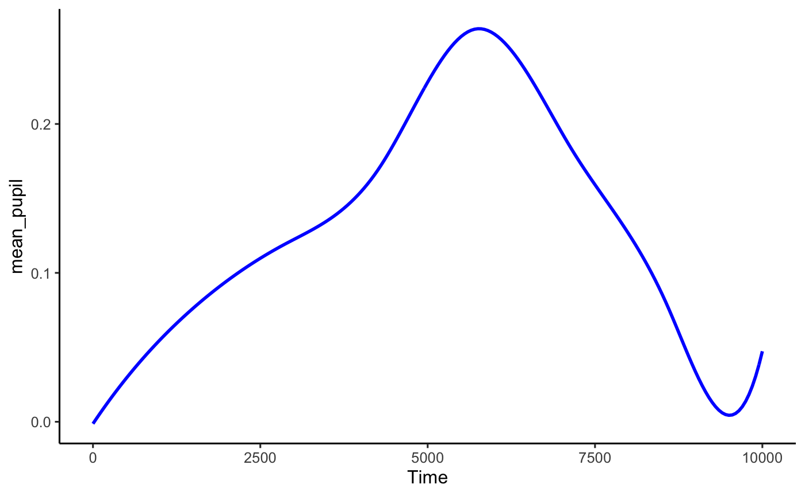
That looks like it’s done a pretty good job capturing the data. The advantage of this kind of analysis is that we can treat each curve as a function, and run a single functional t-test to work out during which window there are divergences. This package allows us to do that directly, and to observe the results.
ft_data <- run_functional_t_test(data = spline_data, pupil = mean_pupil, alpha = 0.05) #> critical value for n = 8 is 2.36462425159278 plot(ft_data, show_divergence = T, colour = 'red', fill = 'orange')
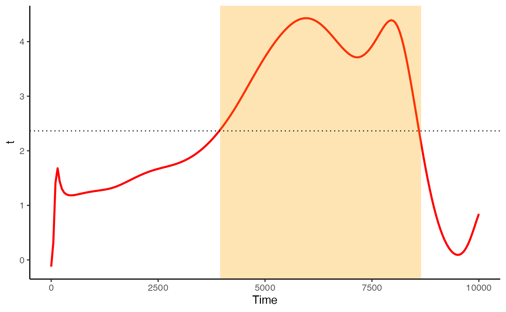
If show_divergence is set to TRUE, the plot will highlight where the two conditions diverge at the alpha you set.
NB Remember the above discussion on autocorrelation in the GAMMs portion of this walkthrough? We are still dealing with time-series data, so this hasn’t necessarily gone away. I am working on adding more powerful FDA techniques into this package to deal with these issues, so please watch this space.
Acknowledgements
This package has had suggestions, encouragement, and help from a number of people, but I wish to especially highlight Sylvain Sirois and Mihaela Duta, whose input has been instrumental. I’d also like to thank Jacolien van Rij for her input with the GAMMs modelling portion of this tutorial.
References
[1] Jackson, I., & Sirois, S. (2009). Infant cognition: Going full factorial with pupil dilation. Developmental Science, 12(4), 670-679. http://doi.org/10.1111/j.1467-7687.2008.00805.x
[2] Allen, M., Poggiali, D., Whitaker, K., Marshall, T. R., & Kievit, R. (2019). Raincloud plots: a multi-platform tool for robust data visualization. Wellcome Open Research, 4, 1-41. http://doi.org/10.12688/wellcomeopenres.15191.1
[3] Ramsay, J.O., & Silverman, B.W. (1997). Functional data analysis. New York: Springer-Verlag.
[4] van Rij, J., Hendriks, P., van Rijn, H., Baayen, R. H., & Wood, S. N. (2019). Analyzing the time course of pupillometric data. Trends in Hearing, 23, 233121651983248. https://doi.org/10.1177/2331216519832483